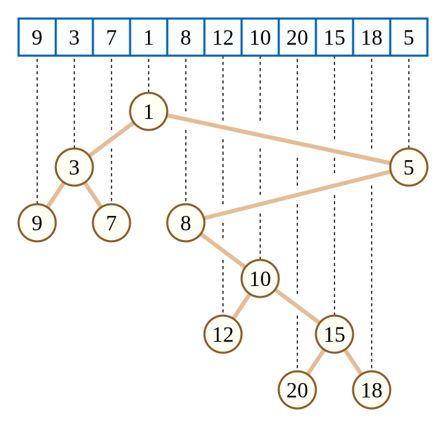
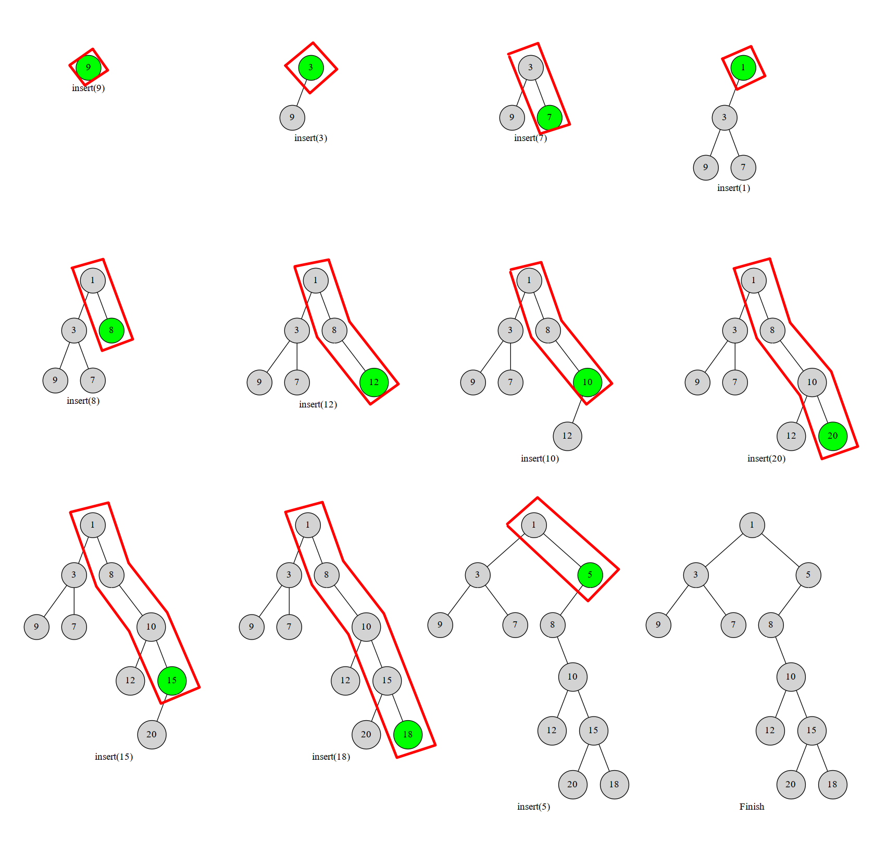
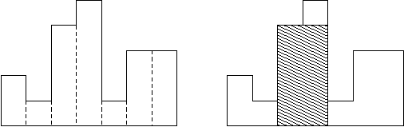

OI Wiki · prijevod · Strukture podatakaOI Wiki · translation · Data structures
Kartezijevo stabloCartesian tree
Sadržaj
Uvod
Kartezijevo stablo (Cartesian tree) binarno je stablo u kojem se svaki čvor sastoji od uređenog para ključeva \((k,w)\). Zahtijeva se da \(k\) zadovoljava svojstvo binarnog stabla pretraživanja (BST), a \(w\) svojstvo heapa. Ako su ključevi \(k,w\) Kartezijeva stabla zadani, pri čemu su svi \(k\) međusobno različiti i svi \(w\) međusobno različiti, struktura tog Kartezijeva stabla je jedinstvena. Primjer je na slici:

(Slika je preuzeta s Wikipedije.)
Gornje Kartezijevo stablo odgovara tome da vrijednosti elemenata niza uzmemo kao ključ \(w\), a indekse niza kao ključ \(k\). Vidimo da ključevi \(k\) ovog stabla zadovoljavaju svojstvo BST-a, a ključevi \(w\) svojstvo min-heapa. Ujedno, prema svojstvu binarnog stabla pretraživanja, vidimo da u ovakvom posebnom Kartezijevu stablu indeksi unutar jednog podstabla čine neprekinuti interval.
Kad se Kartezijevo stablo koristi na natjecanjima, kao ključ \(k\) para obično se uzima indeks u nizu; indeksi \(k\) zadovoljavaju svojstvo BST-a.
U nastavku, kad pišemo \(k,w\), podrazumijevamo da \(k\) zadovoljava svojstvo BST-a, a \(w\) svojstvo heapa.
Izgradnja Kartezijeva stabla monotonim stogom
Postupak
Promotrimo umetanje elemenata u trenutačno Kartezijevo stablo redom po rastućem \(k\).
Za Kartezijevo stablo definirajmo „desni lanac” kao lanac koji nastaje tako da od korijena stalno idemo u desno dijete, sve dok ne dođemo do čvora bez desnog djeteta. Nakon umetanja novi se čvor sigurno nalazi na desnom lancu. Budući da umećemo po rastućem \(k\), koji zadovoljava svojstvo BST-a, novoumetnuti čvor nužno je na krajnjem desnom kraju stabla. Taj čvor ne može biti lijevo dijete, a nema ni desno dijete.
Stoga provodimo sljedeći postupak: odozdo prema gore uspoređujemo \(w\) čvorova na desnom lancu s \(w\) trenutačnog čvora \(u\); čim nađemo čvor \(x\) na desnom lancu za koji vrijedi \(w_x<w_u\), čvor \(u\) pripojimo kao desno dijete čvora \(x\), a dotadašnje desno podstablo čvora \(x\) postaje lijevo podstablo čvora \(u\).
Crveni okvir na slici označava desni lanac koji cijelo vrijeme održavamo:

Očito svaki broj najviše jednom uđe u desni lanac i najviše jednom iz njega izađe (drugim riječima, svaki je čvor na desnom lancu tijekom jednog neprekinutog vremenskog odsječka). Taj se postupak može održavati monotonim stogom: u stogu čuvamo čvorove koji su trenutačno na desnom lancu Kartezijeva stabla. Čim neki čvor više nije na desnom lancu, izbacimo ga. Tako svaki čvor najviše jednom uđe i izađe, pa je složenost \(O(n)\).
Kartezijevo stablo i Treap
Zapravo je Treap vrsta Kartezijeva stabla, samo što su u Treapu vrijednosti \(w\) potpuno nasumične. Treap ima linearni algoritam izgradnje: ako su ključevi \(k\) unaprijed sortirani, izgradnju možemo obaviti gore opisanim algoritmom s monotonim stogom, iako se to rijetko tako radi.
Implementacija u C++-u
// stk čuva indekse u nizu koji odgovaraju čvorovima Kartezijeva stabla
for (int i = 1; i <= n; i++) {
int k = top; // top je vrh stoga prije operacije, k je trenutačni vrh stoga
while (k > 0 && w[stk[k]] > w[i]) k--; // održavamo čvorove na desnom lancu
if (k) rs[stk[k]] = i; // vrh stoga.desno dijete := trenutačni element
if (k < top) ls[i] = stk[k + 1]; // trenutačni element.lijevo dijete := posljednji izbačeni element
stk[++k] = i; // trenutačni element ide na stog
top = k;
}
Primjer zadatka
HDU 1506. Largest Rectangle in a Histogram
Zadano je \(n\) pozicija, na svakoj je visina \(h_i\); treba naći najveći podpravokutnik. Kao na slici:

Osjenčani dio na slici je najveći podpravokutnik.
Ideja rješenja
Konkretno, indeks uzimamo kao ključ \(k\), a \(h_i\) kao ključ \(w\) koji zadovoljava svojstvo min-heapa, i izgradimo Kartezijevo stablo od parova \((i,h_i)\).
Zatim prolazimo po svim čvorovima \(u\) i uzimamo \(w_u\) (tj. visinu \(h\) čvora \(u\)) kao visinu najvećeg podpravokutnika. Budući da izgrađeno Kartezijevo stablo zadovoljava svojstvo min-heapa, visine svih čvorova u podstablu čvora \(u\) veće su ili jednake visini čvora \(u\). Također znamo da indeksi u podstablu čvora \(u\) čine neprekinuti interval. Dakle, dovoljno je znati veličinu podstabla pa možemo izračunati površinu najvećeg podpravokutnika na tom intervalu. Vrijednošću izračunatom za svaki čvor ažuriramo odgovor. Očito se to može obaviti jednim DFS-om, pa je složenost \(O(n)\).
Primjer implementacije
#include <algorithm>
#include <cstring>
#include <iostream>
using namespace std;
using ll = long long;
constexpr int N = 100000 + 10, INF = 0x3f3f3f3f;
struct node {
int idx, val, par, ch[2];
friend bool operator<(node a, node b) { return a.idx < b.idx; }
void init(int _idx, int _val, int _par) {
idx = _idx, val = _val, par = _par, ch[0] = ch[1] = 0;
}
} tree[N];
int root, top, stk[N];
ll ans;
int cartesian_build(int n) { // izgradnja stabla koje zadovoljava svojstvo min-heapa
for (int i = 1; i <= n; i++) {
int k = i - 1;
while (tree[k].val > tree[i].val) k = tree[k].par;
tree[i].ch[0] = tree[k].ch[1];
tree[k].ch[1] = i;
tree[i].par = k;
tree[tree[i].ch[0]].par = i;
}
return tree[0].ch[1];
}
int dfs(int x) { // dovoljan je jedan dfs koji ažurira odgovor
if (!x) return 0;
int sz = dfs(tree[x].ch[0]);
sz += dfs(tree[x].ch[1]);
ans = max(ans, (ll)(sz + 1) * tree[x].val);
return sz + 1;
}
int main() {
cin.tie(nullptr)->sync_with_stdio(false);
int n, hi;
while (cin >> n, n) {
tree[0].init(0, 0, 0);
for (int i = 1; i <= n; i++) {
cin >> hi;
tree[i].init(i, hi, 0);
}
root = cartesian_build(n);
ans = 0;
dfs(root);
cout << ans << '\n';
}
return 0;
}
Literatura
Contents
Introduction
A Cartesian tree is a binary tree in which every node consists of a pair of keys \((k,w)\). The key \(k\) must satisfy the binary search tree (BST) property, and \(w\) must satisfy the heap property. If the keys \(k,w\) of a Cartesian tree are fixed, all \(k\) are pairwise distinct and all \(w\) are pairwise distinct, then the structure of the Cartesian tree is unique. See the figure below:
(Figure taken from Wikipedia.)
The Cartesian tree above corresponds to taking the array values as the key \(w\) and the array indices as the key \(k\). One can see that the keys \(k\) of this tree satisfy the BST property, while the keys \(w\) satisfy the min-heap property. Moreover, by the property of binary search trees, in this special kind of Cartesian tree the indices inside any subtree form a contiguous interval.
When Cartesian trees are used in contests, the array index is usually taken as the key \(k\) of the pair; the indices \(k\) satisfy the BST property.
Below, whenever we use \(k,w\), we assume by default that \(k\) satisfies the BST property and \(w\) satisfies the heap property.
Building a Cartesian tree with a monotonic stack
Procedure
Consider inserting the elements into the current Cartesian tree one by one in increasing order of \(k\).
For a Cartesian tree, define the "right chain" as the chain obtained by starting at the root and repeatedly going to the right child until reaching a node without a right child. After a node is inserted, it must lie on the right chain. Because we insert in increasing order of \(k\), which satisfies the BST property, the newly inserted node is necessarily at the rightmost end of the tree. This node cannot be a left child, and it has no right child.
So we perform the following process: compare, from bottom to top, the \(w\) of the nodes on the right chain with the \(w\) of the current node \(u\); once we find a node \(x\) on the right chain with \(w_x<w_u\), we attach \(u\) as the right child of \(x\), and the former right subtree of \(x\) becomes the left subtree of \(u\).
The red frame in the figure marks the right chain that we maintain throughout:
Clearly every number enters and leaves the right chain at most once (in other words, every node stays on the right chain for one contiguous period of time). This process can be maintained with a monotonic stack: the stack holds the nodes currently on the right chain of the Cartesian tree. Once a node is no longer on the right chain, it is popped. Thus every node is pushed and popped at most once, and the complexity is \(O(n)\).
Cartesian trees and Treaps
In fact, a Treap is a kind of Cartesian tree, except that in a Treap the values \(w\) are completely random. Treaps have a linear-time construction algorithm: if the keys \(k\) are sorted in advance, the construction can be done with the monotonic stack algorithm above, although this is rarely done in practice.
C++ implementation
// stk holds the array indices corresponding to the nodes of the Cartesian tree
for (int i = 1; i <= n; i++) {
int k = top; // top is the stack top before the operation, k is the current stack top
while (k > 0 && w[stk[k]] > w[i]) k--; // maintain the nodes on the right chain
if (k) rs[stk[k]] = i; // stack top.right child := current element
if (k < top) ls[i] = stk[k + 1]; // current element.left child := last popped element
stk[++k] = i; // push the current element
top = k;
}
Example problem
HDU 1506. Largest Rectangle in a Histogram
There are \(n\) positions, and the height at each position is \(h_i\); find the largest sub-rectangle. See the figure:
The shaded part is the largest sub-rectangle in the figure.
Solution idea
Specifically, we take the index as the key \(k\) and \(h_i\) as the key \(w\) satisfying the min-heap property, and build the Cartesian tree of the pairs \((i,h_i)\).
Then we enumerate every node \(u\) and take \(w_u\) (that is, the height \(h\) of node \(u\)) as the height of the largest sub-rectangle. Since the Cartesian tree we built satisfies the min-heap property, the heights of all nodes in the subtree of \(u\) are greater than or equal to that of \(u\). We also know that the indices in the subtree of \(u\) form a contiguous interval. So we only need to know the size of the subtree, and then we can compute the area of the largest sub-rectangle on that interval. We update the answer with the value computed at every node. Clearly this can be done with a single DFS, so the complexity is \(O(n)\).
Reference implementation
#include <algorithm>
#include <cstring>
#include <iostream>
using namespace std;
using ll = long long;
constexpr int N = 100000 + 10, INF = 0x3f3f3f3f;
struct node {
int idx, val, par, ch[2];
friend bool operator<(node a, node b) { return a.idx < b.idx; }
void init(int _idx, int _val, int _par) {
idx = _idx, val = _val, par = _par, ch[0] = ch[1] = 0;
}
} tree[N];
int root, top, stk[N];
ll ans;
int cartesian_build(int n) { // build the tree satisfying the min-heap property
for (int i = 1; i <= n; i++) {
int k = i - 1;
while (tree[k].val > tree[i].val) k = tree[k].par;
tree[i].ch[0] = tree[k].ch[1];
tree[k].ch[1] = i;
tree[i].par = k;
tree[tree[i].ch[0]].par = i;
}
return tree[0].ch[1];
}
int dfs(int x) { // a single dfs updating the answer is enough
if (!x) return 0;
int sz = dfs(tree[x].ch[0]);
sz += dfs(tree[x].ch[1]);
ans = max(ans, (ll)(sz + 1) * tree[x].val);
return sz + 1;
}
int main() {
cin.tie(nullptr)->sync_with_stdio(false);
int n, hi;
while (cin >> n, n) {
tree[0].init(0, 0, 0);
for (int i = 1; i <= n; i++) {
cin >> hi;
tree[i].init(i, hi, 0);
}
root = cartesian_build(n);
ans = 0;
dfs(root);
cout << ans << '\n';
}
return 0;
}